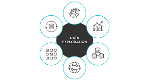

To apply HR analytics in uncovering key factors behind employee turnover,
enabling data-informed strategies that enhance retention, improve employee satisfaction,
and strengthen organizational stability.


To analyze crash data to identify key factors contributing to road incidents, uncover patterns and high-risk situations,
and provide actionable insights that support data-driven road safety strategies and accident prevention measures.

To evaluate the financial health of loan applicants and assess potential risk using data analysis techniques, enabling more accurate loan approval decisions,
minimizing default rates, and supporting strategic lending practices.

To design and implement efficient SQL query statements for extracting, managing, and analyzing structured data from relational databases,
with the goal of supporting data-driven decision-making and enhancing data accessibility across business functions.
View Project

To leverage data analytics techniques to uncover sales trends, customer behavior, and product performance in order to develop actionable
insights that drive revenue growth, improve customer experience, and enhance overall e-commerce sales efficiency.

This report presents an HR analytics dashboard built using Power BI for DYKE INTERGRATED. The focus is to evaluate the effectiveness of training programs, employee promotions,
and performance improvements across key departments: Finance, HR, IT, Marketing, and Sales..

The goal of this project is to analyze and interpret a healthcare dataset that includes key variables such as total billing amount, number of doctors, medical conditions,
and number of hospitals. The analysis aims to uncover insights into healthcare billing trends, resources allocation, and the impact of medical conditions on costs.